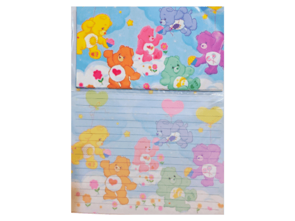

El encanto de la papelería con aroma.
Antes de los mensajes que se borran solos y de las stories que duran 24 horas, las cartas eran objetos físicos. Llegaban en sobres con olor, escritas a mano, con la letra que cada uno tenía ese año. Era una manera distinta de hacerse presente.

Las hojas con aroma eran la versión más cotidiana de ese ritual. Un cuadernito con seis hojas perfumadas, tres sobres a juego y un diseño que casi siempre era el dibujito favorito del momento: ositos cariñosos, kawaii, fresita, panda enamorado. No era solo papel: era una pequeña declaración de gusto.
La gente las usaba para mensajes que no se decían en voz alta. Una nota de amor pasada por debajo de la puerta del salón. Una invitación a un cumpleaños escrita con calma una semana antes. Una disculpa que necesitaba pensarse despacio. Todas tenían algo en común: detrás de cada una había tiempo invertido.
En Monerías Retro seguimos consiguiendo papelería con aroma porque creemos que ese ritual no debería extinguirse. Escribir a mano sigue siendo una de las maneras más honestas de decirle algo a alguien.
Si te dieron ganas de probar, en nuestra sección de papelería está la colección completa, con todos los diseños que recordás y algunos nuevos.
← Volver al blog